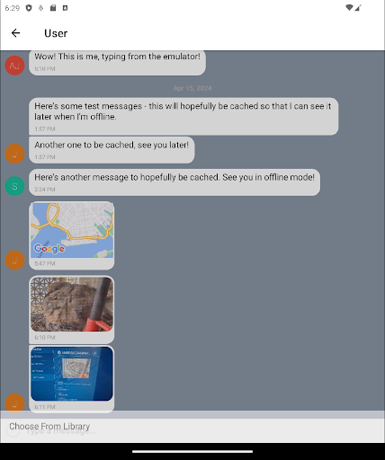

The Chat App is a mobile chatting application created using React Native and Gifted Chat to build the app, Expo and Android Studio to test the app, and Google Firebase to store data for the app and its users. It allows users to create an account for chatting in a group chat in which they can send messages, post images, and share locations.
The purpose of this project was to demonstrate my mastery of JavaScript and React Native in order to display my skills in the world of tech where mobile development skills are highly valued.
The objective of this project was to build a chat app for mobile devices with React Native in order to show my skills and bolster my professional portfolio.
The production of this project lasted about one week, from initial builds to testing and debugging to final submission.
Lead Developer: Justin Ly
Tutor: Rylan Albach
Mentor: Mahesh Rodrigo
As it turned out, the user interface for the starting screen was the first big hurdle during the development process of the Chat App. There were very specific expectations placed on me for how the UI should be styled, and a reference image for me to use as a basis for what the final design was supposed to look like. Utilizing Flexbox, cross-referencing with the provided image, and listening to feedback received from my tutor, I was able to achieve the desired look and feel, and meet these expectations. From there, implementing the rest of the necessary interfaces was relatively hassle-free.
As with any modern online app, a database was needed to support the functionality of this project. I needed somewhere to store user info, messages, sent files, etc. Google Firebase ended up filling that role, and thanks to Google’s thorough documentation and my tutor’s instruction, implementing it was a smooth process.
Testing my code was the next step in development; I needed to be able to make sure what I built was functional and performing as expected before I submitted my work. With my prior work, I was able to simply launch a browser or local server to check my code, or make use of testing tools like Jest to write test scenarios and look for expected/unexpected output. For this project, however, since it was my first foray into mobile development and a new environment, I needed to install new tools to accomplish the same goals. This was where Expo and Android Studio came in - Expo allowed me to essentially use my phone as a local server to test my app, and Android Studio let me emulate an Android on my PC to do the same. During the testing phase of this project, I actually used both at the same time to make sure I could send and receive messages in real time - and it worked. Whatever I sent from my phone showed up in the emulator, and vice versa. This allowed me to test whatever I needed to as both messenger and recipient.
For this project, it wasn’t enough to just implement a basic chatting app; GiftedChat already made that an easy enough process. It needed to be more fleshed out with additional features, such as image uploading, location sharing, and video chatting. For this aspect, Expo saved the day again, as not only did it provide a convenient mobile testing tool, it also included a useful toolchain for implementing the features I just mentioned.
Overall, I would say that I was able to achieve a satisfactory end product according to the expectations outlined for me and what the final app was capable of. The GiftedChat Messaging App project taught me many things and expanded my knowledge base of software development, from both the positive experiences and negative experiences.
What Went Well: Learning about GiftedChat and Google Firebase opened up a world of possibilities for me in terms of what can be achieved on the different fronts of web and app development. GiftedChat made it astonishingly easy to create my own chat app, and Firebase accomplished the same for database management. For databases, I only really had experience with MongoDB in the past, which I remember being somewhat complicated in comparison. Additionally, I got a taste for mobile development and testing with React Native and Expo, unlocking more avenues for me to explore in the world of software engineering.
What Could Be Better: My CSS skills sometimes take a backseat to my JavaScript skills in my projects, so this was a good time to get more practice in to keep them sharp. It took a little bit of work to warm them up again, but I was eventually able to achieve the look and feel of the UI from the reference image. I will be more mindful to keep these skills honed for continued use in future projects, and look for opportunities to grow them even more.
Reflection: Were I to work on this or a similar project again, I think I would like to take more time and care to really polish the project to an even more presentable state. I might dabble in a more fleshed out login and authentication system next time than just providing a name and selecting a color on the home screen, thereby allowing a more persistent and personal user experience. I also know that there are some flaws in a few places with the CSS styling. While they might not be immediately noticeable, I can’t help but feel that there will still be cases where some issues might crop up, and I would like to take the time to really practice my CSS mastery by accounting for those cases. Still, in the end, I’m proud of what I was able to achieve in the time I spent on this project.
